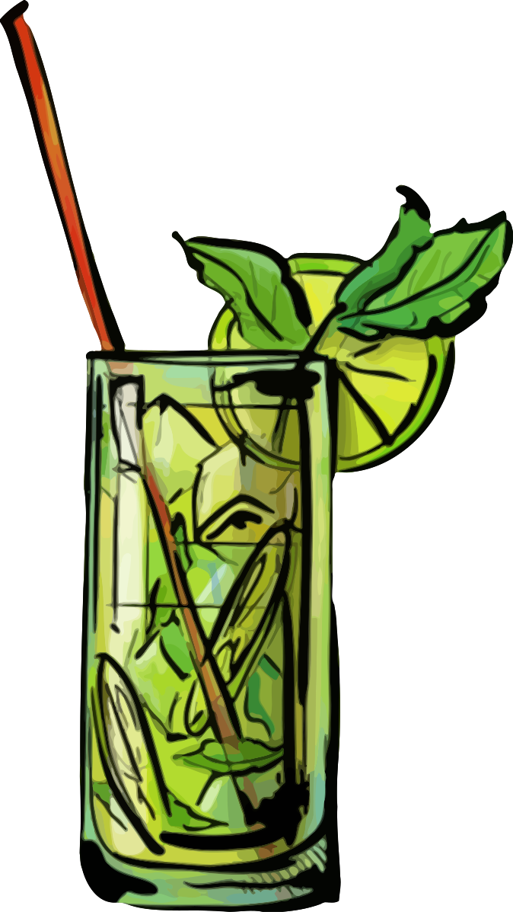

Home
Mojito

Description
Mojito is a traditional Cuban highball. Its combination of sweetness, citrus, and herbaceous mint flavors is intended to complement the rum, and has made the mojito a popular summer drink.
Ingredients
- 50ml White Rum
- 8 Mint leaves
- 12 1/2ml Sugar Syrup
- 25ml Lime Juice
- 2 Mint sprigs
Steps
- Add the white rum to a highball glass
- Add 8–10 mint leaves and sugar syrup and lime juice
- Muddle with bar spoon
- Add crushed ice and a splash of soda
- Mix drink down with bar spoon
- Taste
- Top up with more crushed ice
- Slap 2 mint sprigs to release essence and put into drink
- Add small splash of soda and straw